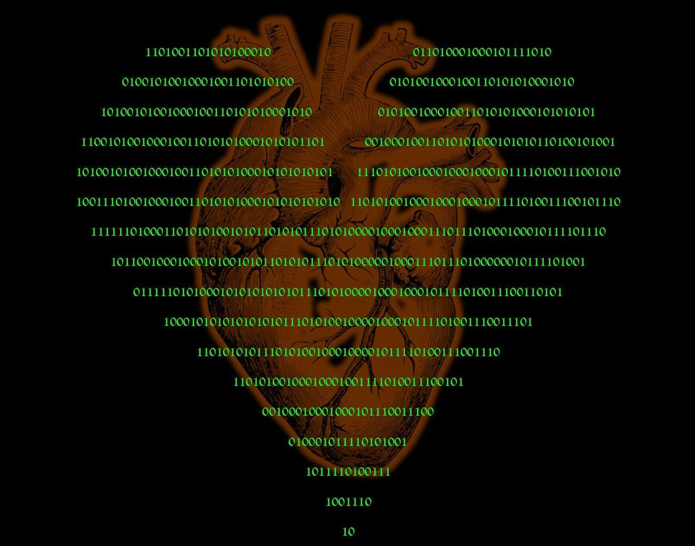
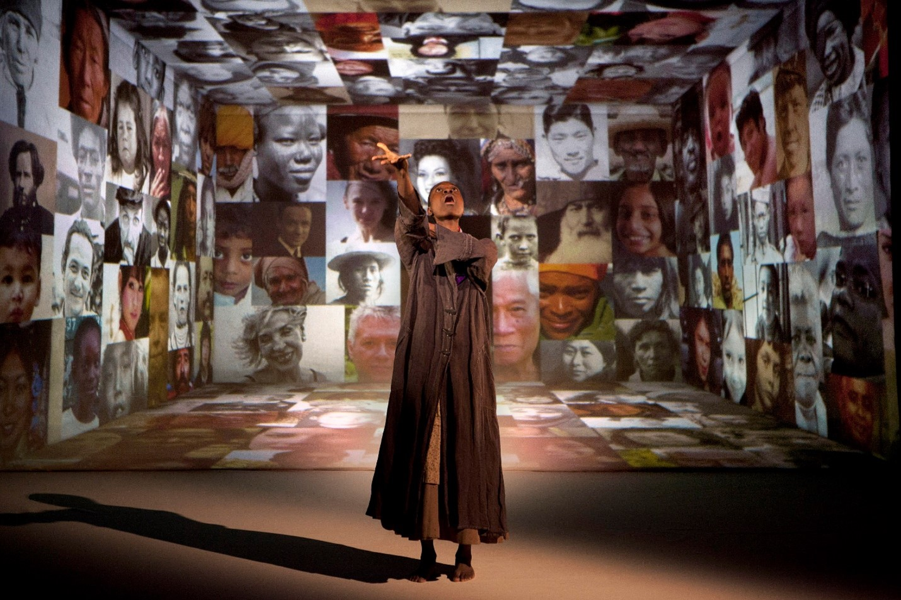

Writing
I write personal essays, academic scholarship, and critical reviews. I am, however, a chameleon with words and can adapt my voice and tone to an subject or audience.
Media
- Blogging
- Personal Essays
- Critical Reviews
- Academic Writing
Services
- Ghostwriting
- Copywriting
- Research
- Editing & Proofreading
Skills
- MLA, APA, Chicago
- Advanced Spanish
- Intermediate French
- Beginner German
WRITING SAMPLES
ABSTRACT DEPRESSIONISM
Mixed-media blog
Under construction!
The title of this project came to me in the depths of the pandemic. Originally, it was a watercolor series. But, alas, that's not my strongest medium. Now it's a blog. Not exactly sure what it's about, but I'll figure it out along the way.
Check it out"Don't Date Your Roommate"
L.A. Times, L.A. Affairs
L.A. Affairs, July 2021: Part cautionary tale, part therapeutic exercise—it’s just one of the many wild stories from 2020.
Read it
MFA THESIS
Innovation and Experimentation in the Fringe Rhizome: The Fringe Festival Model in the 21st Century Theatre
An examination of the use of non-traditional space and postdramatic theatre in the Edinburgh Fringe Festival. Accompanied by a site-specific production of Caryl Churchill's LOVE AND INFORMATION in 2019 Tucson Fringe Festival.
Read Thesis
Review of 2017 Edinburgh Fringe
A review of several site-specific and ijmmersive shows at the 2017 Edinburgh Fringe, which sparked my fascination with live storytelling in nontraditional spaces.
ReadACADEMIC WRITING
“Transgressive Titties: Female Expression and Transgression in the Jacobean Court Masque.”
Paper presentation at the Multidisciplinary Graduate Conference, The Newberry Center for Renaissance Studies. 2017.
Paper PowerPointContributor “Edward Franklin Albee, II” & “Vesta Victoria.”
American Vaudeville: A Celebration (1st Ed.) by David Soren. background Kendall Hunt, 2020.
Book listing SampleSCRIPT COVERAGE
Contact to request samples